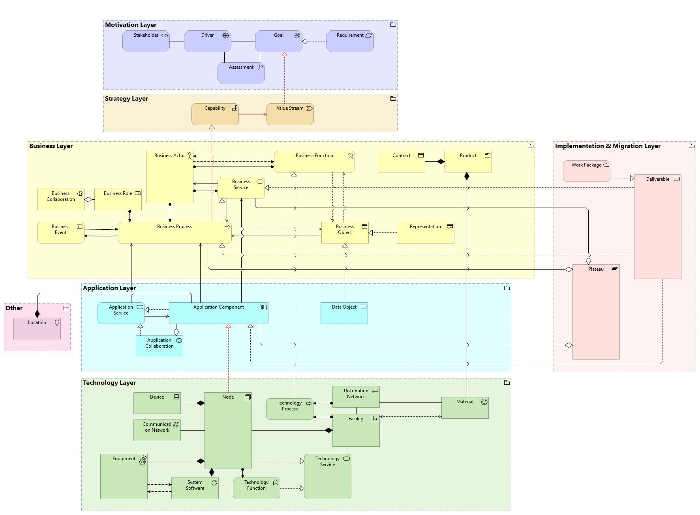
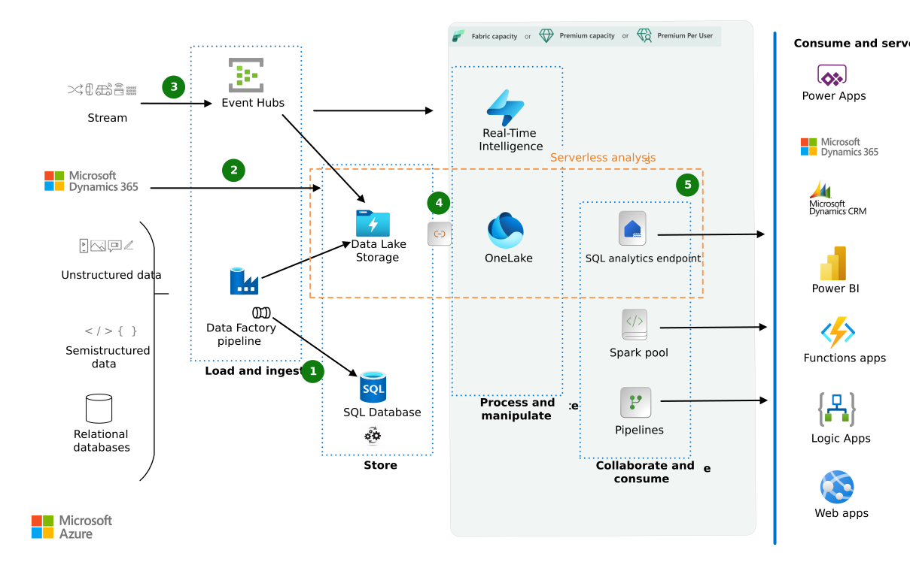
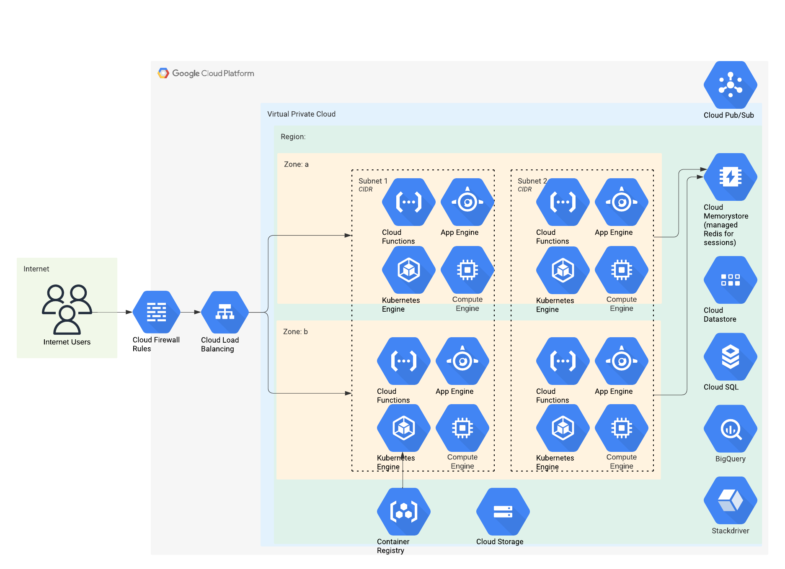

Architecture SI
 Je conçois et pilote des architectures d’entreprise résilientes, performantes et évolutives.
Mon approche repose sur une vision stratégique alignée métier, une maîtrise des principes TOGAF et des référentiels cloud-native.
J’ai défini et mis en œuvre des SI multi-sites et multi-cloud pour des ETI et grands groupes, en garantissant continuité de service et maîtrise des coûts avec des approches FinOps.
Spécialiste des architectures microservices, event-driven et serverless, je structure les systèmes pour absorber des pics de charge de plusieurs ordres de grandeur.
Je maîtrise les patterns de résilience et les applique systématiquement.

Expert en Domain-Driven Design et Event Streaming, je traduis les besoins métier complexes en domaines et bounded contexts clairs.
J’ai conduit plusieurs chantiers de refonte complète de SI legacy vers des cibles modernes (strangler pattern, domain separation).
Maîtrise approfondie des principes de découplage, observabilité et traçabilité de bout en bout.
Je pilote la gouvernance d’architecture : comités d’architecture, cartographie, principes de conception, debt tracking.
Je suis intervenu sur des environnements critiques (financier, santé, énergie, retail)mark> avec des SLA 99,99 % ou plus.
Capable d’anticiper les évolutions technologiques et d’intégrer très tôt les sujets IA, edge computing, zero-trust.
Mon obsession : concevoir des systèmes qui restent simples à comprendre et à faire évoluer même après 5–7 ans d’exploitation.
Applications & Data
J’interviens sur l’ensemble du spectre applicatif et data : conception, développement, migration, modernisation et exploitation. Expert en architectures event-driven et temps reels, je les ai déployés à grande échelle dans plusieurs contextes métier. Spécialiste de l’observabilité applicative : logging structuré, metrics, tracing distribué, alert fatigue reduction. Capable de piloter des équipes full-stack et data en mode agile/scrum/kanban avec forte exigence technique.
J’accompagne les entreprises dans leur stratégie et leur migration cloud public et hybride. Spécialiste des approches lift-and-shift, re-platform, refactor et re-architect avec un focus systématique sur la valeur métier. Fort d’une longue expérience en FinOps : optimisation des coûts (Reserved Instances, Savings Plans, Spot, Committed Use), tagging, reporting. J’ai conduit des chantiers de réduction de facture cloud de 30 à 55 % tout en augmentant la performance et la résilience.